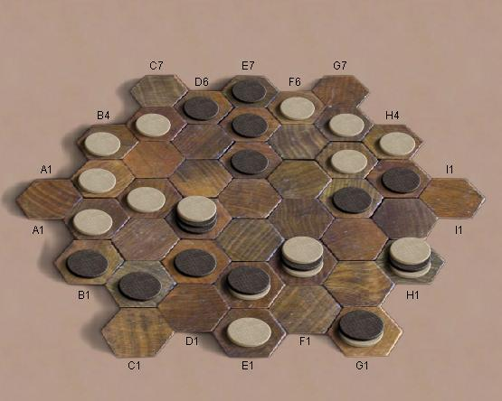

Crossfire
Crossfire - минималистичная игра со стеками от Христиана
Фрилинга. Игра ведется на доске в форме снежинки, которая
состоит из шестиугольных полей. Правила очень просты и
элегантны.
Правила:
- Первыми ходят белые. Проигрывает тот, кто не может
сделать ход.
- Походить можно двумя способами:
- N фишек вашего цвета из верхушки стека
передвигаются на N шагов в любом направлении
- Ложится одна фишка из вашего резерва на любое
место доски.
В конце хода убираются фишки снизу нового стека, пока
его высота не станет равной количеству прилегающих
полей. Снятые фишки своего цвета переходят в резерв, а
фишки противника берутся в плен.
- Принцип КО:
запрещено делать ход, если он приводит к повторению
позиции, ранее уже возникавшей в данной партии.
Боты: уточняется.
|

|